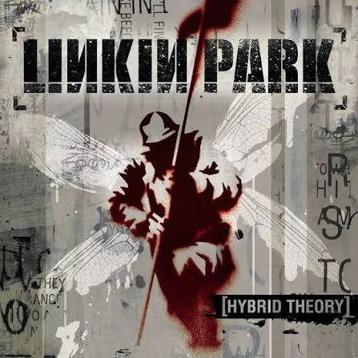
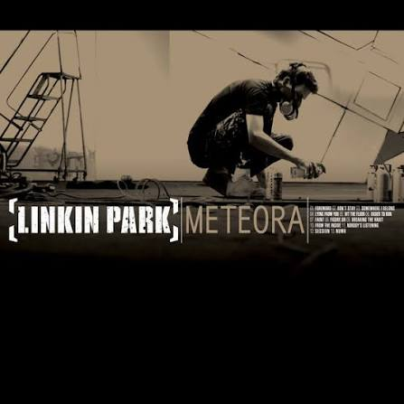
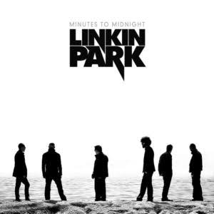
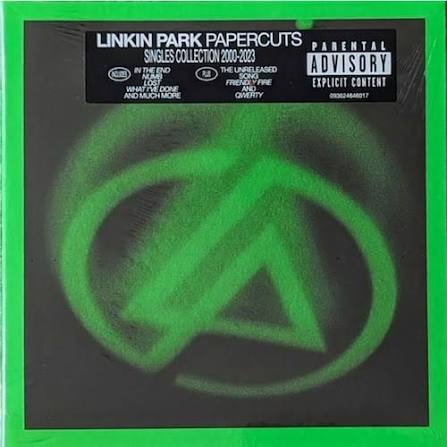
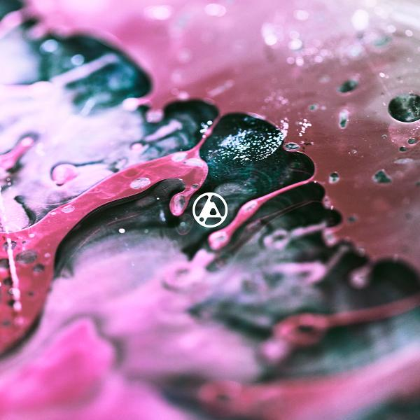

♪Albums♪
La discografía de Linkin Park consta de siete álbumes de estudio, dos remezclas, dos en vivo, ocho en DVD, dieciocho EP, veintisiete sencillos y treinta y seis vídeos musicales. Linkin Park se formó en Agoura Hills, California en 1996 por Mike Shinoda (voz y guitarra), Brad Delson (guitarra) y Rob Bourdon (batería). Joe Hahn (dj) y Dave Farrell (bajo) se integraron más tarde al grupo y en 1999 Chester Bennington se convirtió en un miembro de la banda.
Aqui se muestran algunos Albums y en lo personal mis favoritos:
- Hybrid Theory (2000) – Su álbum debut, considerado un clásico del nu metal con éxitos como «In the End» y «Crawling».
- Meteora (2003) – Su segundo álbum de estudio, que incluye temas icónicos como «Numb» y «Faint».
- Minutes to Midnight (2007) – Un cambio en su sonido hacia el rock alternativo con sencillos como «What I've Done».
- Papercuts es el primer álbum de grandes éxitos de Linkin Park, titulado oficialmente Papercuts (Singles Collection 2000–2023), lanzado el 12 de abril de 2024 a través de Warner Records.

Album: Meteora

Album: Minutes to Midnight

Album: Papercuts
